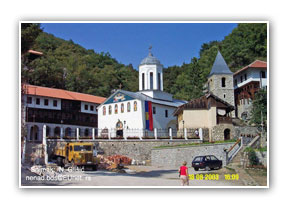

SRBIJA
Manastir Sv. Trojica predstavlja najlepše arhitektonsko delo među svim Ovčarsko-kablarskim manastirima. Prvi put se pominje 1594-1595. godine, a
pretpostavlja se da je manastir sagrađen u drugoj polovini 16. veka.

Crkva je jednobrodna građevina sa trodelnim oltarskim prostorom, spolja petostranom apsidom, pravougaonim pevnicama, pripratom kao posebnom jedinicom
i kupolom dvanestostranog tambura, koja se oslanja na četiri pilastra. Primetan je uticaj raške graditeljske škole i u portalima i u plastičnoj obradi
prozora na kubetu. Bratstvo manastira je severno od crkve podiglo konak sa podrumom od lomljenog kamena i spratom u bondruku – značajno svedočanstvo
narodnog neimarstva.
Od nekadašnjeg živopisa preostale su samo dve freske iz prve polovine 17. veka. Nikola Marković je u romantičarskom maniru 1868. oslikao visoki i
bogato rezbareni ikonostas sa ikonama.